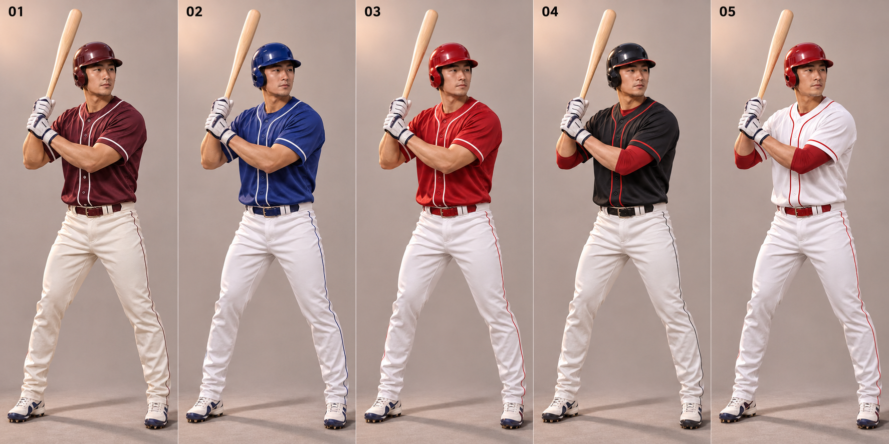
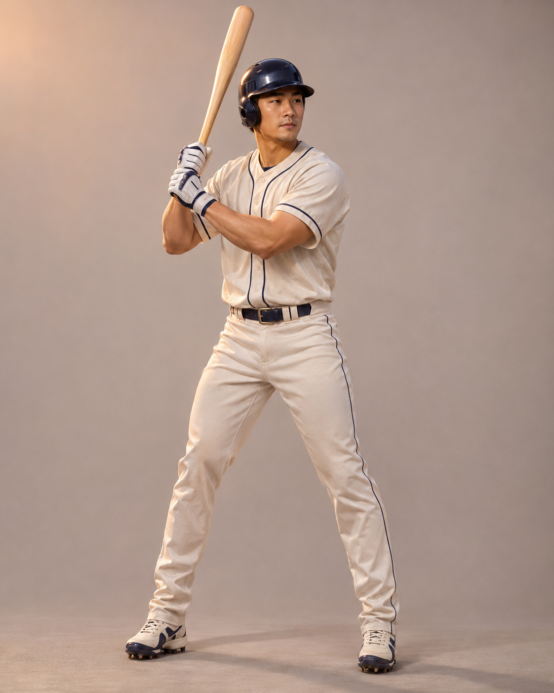
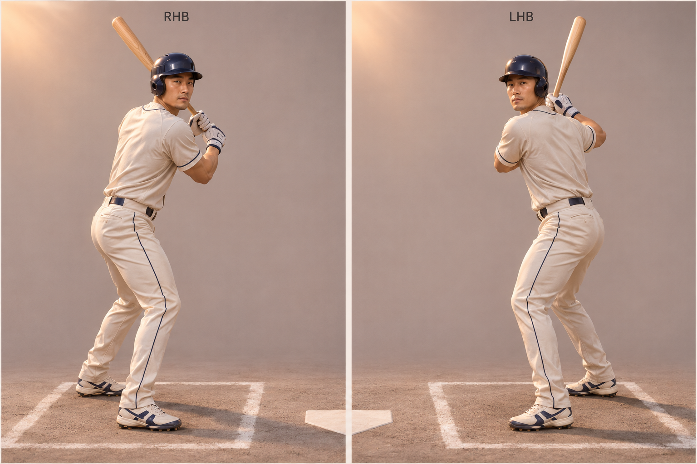
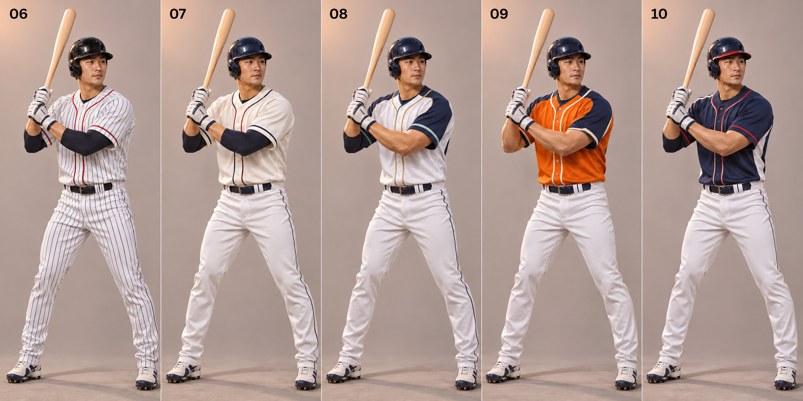

피움 히어로즈
재능을 피우는 성장의 의미
BASEBALL · ART DIRECTION 01
달리기의 사진 같은 질감과 따뜻한 경기장 조명을 이어받은 첫 야구 시안입니다. 같은 선수를 기준으로 타격 자세와 10개 팀 의상·헬멧을 비교합니다.
얼굴·체형·광원과 홈플레이트 뒤 시점을 먼저 확인합니다.

같은 얼굴과 체형을 유지하는 의상 비교의 기준입니다.
원본 확대 보기 ↗타자·투수·공·스트라이크존을 따로 얹을 수 있도록 비워 둔 배경입니다.
원본 확대 보기 ↗동작 프레임을 만들기 전의 준비 자세 비교입니다.

화면에 표시된 10개 구단명으로 확정했습니다. 같은 선수의 팀별 의상과 헬멧을 비교합니다.

재능을 피우는 성장의 의미
관중의 함성이 들리는 이름
감칠맛 나는 타격과 경기
훈련하며 강해지는 선수
타석을 압도하는 기세

Good Game, 즐거운 승부
공이 날아올 때의 두근거림
경험치를 쌓는 성장의 상징
승부를 바꾸는 한 방
로켓처럼 뻗는 강한 타구
10개 구단명은 확정했습니다. 유니폼·헬멧은 팀별 대표색을 비교하는 디자인 초안이며, 이름 확정은 의상 디자인 전체의 확정을 뜻하지 않습니다. 이름·로고·스폰서는 이미지에 넣지 않았습니다.